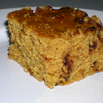

4-ingredient pumpkin brownies
I was vegan for 15 years, and these were a go-to at my house, just with the egg swapped out for 1/4 mashed banana. Sadly after a decent amount of searching for this project, it looks like the original recipe is lost to the sands of time, but this should be a good approximation. Now that my girlfriend's a vegetarian who enjoys testing out vegan places, I should really revive this recipe and surprise her with it sometime.
Note: I don't remember the original recipe having any chocolate, and I've never been a huge fan so I feel like I would know if it did. When I make these I may try to leave it out and see what happens tbh.
Ingredients
- 1 can pumpkin puree
- 1 cup sunbutter
- 1/2 cup maple syrup (or Fruit Sweet vegan honey)
- 1/4 cup cocoa powder
Steps
- Preheat oven to 350 degrees, grease or line 8x8 inch baking tin.
- Mix sunbutter, pumpkin, and maple (or honey substitute) in large bowl.
- Stir in cocoa powder until smooth/no clumps.
- Scoop batter into baking tin and smooth out the top.
- Bake for 30 minutes, or until an inserted fork comes out clean.
- Let cool and serve.